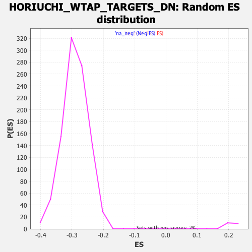

| | | Dataset | DE_genes2 |
| Phenotype | NoPhenotypeAvailable |
| Upregulated in class | na_neg |
| GeneSet | HORIUCHI_WTAP_TARGETS_DN |
| Enrichment Score (ES) | -0.6912784 |
| Normalized Enrichment Score (NES) | -2.3851764 |
| Nominal p-value | 0.0 |
| FDR q-value | 0.0 |
| FWER p-Value | 0.0 |
Table: GSEA Results Summary
 Fig 1: Enrichment plot: HORIUCHI_WTAP_TARGETS_DN
Fig 1: Enrichment plot: HORIUCHI_WTAP_TARGETS_DN
Profile of the Running ES Score & Positions of GeneSet Members on the Rank Ordered List
| PROBE | GENE SYMBOL | GENE_TITLE | RANK IN GENE LIST | RANK METRIC SCORE | RUNNING ES | CORE ENRICHMENT | | 1 | NDUFA7 | | | 214 | 4.957 | -0.0083 | No |
| 2 | ULBP2 | | | 281 | 4.530 | -0.0078 | No |
| 3 | CHRNA1 | | | 356 | 4.192 | -0.0082 | No |
| 4 | FDPS | | | 369 | 4.124 | -0.0049 | No |
| 5 | CNN2 | | | 631 | 3.339 | -0.0177 | No |
| 6 | UQCC2 | | | 717 | 3.169 | -0.0198 | No |
| 7 | ATG9A | | | 806 | 3.036 | -0.0222 | No |
| 8 | CD44 | | | 813 | 3.021 | -0.0196 | No |
| 9 | CSK | | | 1283 | 2.375 | -0.0461 | No |
| 10 | BTBD6 | | | 1341 | 2.323 | -0.0473 | No |
| 11 | RPL13 | | | 1549 | 2.129 | -0.0579 | No |
| 12 | FDFT1 | | | 1913 | 1.823 | -0.0785 | No |
| 13 | C12orf57 | | | 2000 | 1.753 | -0.0820 | No |
| 14 | PIM3 | | | 2159 | 1.644 | -0.0901 | No |
| 15 | LRRC17 | | | 2403 | 1.491 | -0.1036 | No |
| 16 | ACAT2 | | | 2466 | 1.460 | -0.1060 | No |
| 17 | RPL7A | | | 2543 | 1.417 | -0.1093 | No |
| 18 | CDH5 | | | 2626 | 1.374 | -0.1130 | No |
| 19 | ATP2C1 | | | 2737 | 1.312 | -0.1184 | No |
| 20 | RPL15 | | | 2763 | 1.304 | -0.1187 | No |
| 21 | CRIP2 | | | 2902 | 1.238 | -0.1259 | No |
| 22 | FBXO32 | | | 3164 | 1.127 | -0.1409 | No |
| 23 | TPP1 | | | 3300 | 1.075 | -0.1482 | No |
| 24 | DDX11 | | | 3360 | 1.054 | -0.1507 | No |
| 25 | ZNF618 | | | 3421 | 1.030 | -0.1534 | No |
| 26 | MEDAG | | | 3432 | 1.028 | -0.1530 | No |
| 27 | PGF | | | 3583 | 0.977 | -0.1613 | No |
| 28 | NRARP | | | 3895 | 0.869 | -0.1796 | No |
| 29 | PGK1 | | | 3946 | 0.851 | -0.1818 | No |
| 30 | SRPRB | | | 4312 | 0.745 | -0.2035 | No |
| 31 | STUB1 | | | 4316 | 0.744 | -0.2030 | No |
| 32 | RASSF2 | | | 4390 | 0.722 | -0.2068 | No |
| 33 | SULT1B1 | | | 4400 | 0.721 | -0.2066 | No |
| 34 | FASN | | | 4943 | 0.583 | -0.2394 | No |
| 35 | DRG2 | | | 5117 | 0.539 | -0.2495 | No |
| 36 | RPRD2 | | | 5185 | 0.523 | -0.2531 | No |
| 37 | AKR1B1 | | | 5243 | 0.507 | -0.2561 | No |
| 38 | FUT11 | | | 5326 | 0.486 | -0.2607 | No |
| 39 | CMPK1 | | | 5452 | 0.460 | -0.2680 | No |
| 40 | PECAM1 | | | 5633 | 0.420 | -0.2786 | No |
| 41 | TOR3A | | | 5931 | 0.359 | -0.2966 | No |
| 42 | RNF11 | | | 5955 | 0.355 | -0.2976 | No |
| 43 | STON1 | | | 6011 | 0.344 | -0.3007 | No |
| 44 | RGS4 | | | 6068 | 0.333 | -0.3038 | No |
| 45 | RPL3 | | | 6194 | 0.305 | -0.3112 | No |
| 46 | LSM4 | | | 6205 | 0.302 | -0.3115 | No |
| 47 | COX7B | | | 6225 | 0.297 | -0.3124 | No |
| 48 | LXN | | | 6265 | 0.292 | -0.3145 | No |
| 49 | IFNAR1 | | | 6282 | 0.290 | -0.3152 | No |
| 50 | LAMP2 | | | 6343 | 0.277 | -0.3186 | No |
| 51 | ARSB | | | 6395 | 0.264 | -0.3215 | No |
| 52 | SPATS2L | | | 6462 | 0.252 | -0.3253 | No |
| 53 | PPP1R2 | | | 6586 | 0.225 | -0.3327 | No |
| 54 | APOBEC3B | | | 7101 | 0.134 | -0.3642 | No |
| 55 | CENPW | | | 7436 | 0.075 | -0.3847 | No |
| 56 | FLNA | | | 7455 | 0.073 | -0.3857 | No |
| 57 | CAT | | | 7602 | 0.048 | -0.3946 | No |
| 58 | MAVS | | | 7662 | 0.039 | -0.3982 | No |
| 59 | PLP2 | | | 7811 | 0.016 | -0.4073 | No |
| 60 | CDH2 | | | 7836 | 0.012 | -0.4088 | No |
| 61 | C21orf91 | | | 7883 | 0.007 | -0.4116 | No |
| 62 | LDHA | | | 8226 | -0.046 | -0.4326 | No |
| 63 | SC5D | | | 8475 | -0.088 | -0.4478 | No |
| 64 | PDE1C | | | 8506 | -0.094 | -0.4496 | No |
| 65 | PEX13 | | | 9138 | -0.223 | -0.4882 | No |
| 66 | CXADR | | | 9210 | -0.243 | -0.4924 | No |
| 67 | HMGCR | | | 9241 | -0.253 | -0.4939 | No |
| 68 | PPIA | | | 9598 | -0.339 | -0.5155 | No |
| 69 | ATXN10 | | | 9643 | -0.351 | -0.5179 | No |
| 70 | LEPROTL1 | | | 9858 | -0.416 | -0.5307 | No |
| 71 | GLO1 | | | 9995 | -0.459 | -0.5386 | No |
| 72 | ARHGAP18 | | | 10011 | -0.463 | -0.5390 | No |
| 73 | CEP85 | | | 10192 | -0.523 | -0.5496 | No |
| 74 | ANKRD46 | | | 10227 | -0.532 | -0.5512 | No |
| 75 | ST8SIA4 | | | 10229 | -0.532 | -0.5507 | No |
| 76 | PHF10 | | | 10371 | -0.576 | -0.5588 | No |
| 77 | UNG | | | 10394 | -0.586 | -0.5596 | No |
| 78 | PHB | | | 10472 | -0.610 | -0.5637 | No |
| 79 | NUP98 | | | 10768 | -0.713 | -0.5812 | No |
| 80 | SQLE | | | 10830 | -0.738 | -0.5842 | No |
| 81 | WDFY1 | | | 10878 | -0.758 | -0.5864 | No |
| 82 | SEPHS1 | | | 11002 | -0.803 | -0.5931 | No |
| 83 | BCAP29 | | | 11028 | -0.813 | -0.5939 | No |
| 84 | HACL1 | | | 11221 | -0.891 | -0.6048 | No |
| 85 | MRPL48 | | | 11242 | -0.898 | -0.6052 | No |
| 86 | CCDC86 | | | 11347 | -0.948 | -0.6106 | No |
| 87 | DCXR | | | 11515 | -1.010 | -0.6199 | No |
| 88 | GSKIP | | | 11624 | -1.056 | -0.6255 | No |
| 89 | ANGPT2 | | | 11673 | -1.077 | -0.6274 | No |
| 90 | CCT7 | | | 11694 | -1.083 | -0.6276 | No |
| 91 | MPP4 | | | 11708 | -1.089 | -0.6273 | No |
| 92 | ZDHHC20 | | | 11896 | -1.177 | -0.6376 | No |
| 93 | EEF1B2 | | | 11997 | -1.220 | -0.6426 | No |
| 94 | SNRNP27 | | | 12002 | -1.223 | -0.6416 | No |
| 95 | GSPT1 | | | 12026 | -1.234 | -0.6418 | No |
| 96 | FECH | | | 12047 | -1.245 | -0.6418 | No |
| 97 | HMGA1 | | | 12102 | -1.273 | -0.6439 | No |
| 98 | ARNTL2 | | | 12107 | -1.274 | -0.6429 | No |
| 99 | RPL13A | | | 12255 | -1.353 | -0.6506 | No |
| 100 | TIMM50 | | | 12266 | -1.357 | -0.6498 | No |
| 101 | LRRC8C | | | 12282 | -1.366 | -0.6494 | No |
| 102 | SYT1 | | | 12421 | -1.435 | -0.6565 | No |
| 103 | PGRMC2 | | | 12489 | -1.471 | -0.6592 | No |
| 104 | TMEM33 | | | 12494 | -1.473 | -0.6579 | No |
| 105 | ATP8B2 | | | 12506 | -1.476 | -0.6572 | No |
| 106 | WTAP | | | 12516 | -1.483 | -0.6562 | No |
| 107 | NMT2 | | | 12619 | -1.543 | -0.6610 | No |
| 108 | UBXN2A | | | 12650 | -1.561 | -0.6613 | No |
| 109 | FSD1 | | | 12693 | -1.586 | -0.6623 | No |
| 110 | HMGA2 | | | 12776 | -1.631 | -0.6657 | No |
| 111 | EDEM1 | | | 12806 | -1.652 | -0.6659 | No |
| 112 | PI4K2B | | | 12819 | -1.666 | -0.6650 | No |
| 113 | ZNF106 | | | 12933 | -1.735 | -0.6702 | No |
| 114 | SNRPA | | | 12939 | -1.737 | -0.6688 | No |
| 115 | PALD1 | | | 12941 | -1.738 | -0.6672 | No |
| 116 | TMEM64 | | | 13015 | -1.779 | -0.6699 | No |
| 117 | RRM1 | | | 13038 | -1.791 | -0.6695 | No |
| 118 | KIF22 | | | 13043 | -1.792 | -0.6679 | No |
| 119 | POLD1 | | | 13115 | -1.833 | -0.6705 | No |
| 120 | CENPM | | | 13147 | -1.858 | -0.6706 | No |
| 121 | ING3 | | | 13150 | -1.860 | -0.6688 | No |
| 122 | CANX | | | 13199 | -1.890 | -0.6699 | No |
| 123 | UBE2S | | | 13279 | -1.941 | -0.6729 | No |
| 124 | CCNC | | | 13299 | -1.953 | -0.6721 | No |
| 125 | PBDC1 | | | 13429 | -2.045 | -0.6780 | No |
| 126 | DNAJC10 | | | 13440 | -2.057 | -0.6766 | No |
| 127 | USP38 | | | 13462 | -2.074 | -0.6758 | No |
| 128 | COQ3 | | | 13688 | -2.234 | -0.6875 | No |
| 129 | WWTR1 | | | 13721 | -2.257 | -0.6872 | No |
| 130 | NCAPD2 | | | 13788 | -2.321 | -0.6890 | Yes |
| 131 | SLC25A5 | | | 13792 | -2.324 | -0.6869 | Yes |
| 132 | ATL3 | | | 13821 | -2.348 | -0.6863 | Yes |
| 133 | HSP90AA1 | | | 13840 | -2.364 | -0.6850 | Yes |
| 134 | SMAD2 | | | 13857 | -2.375 | -0.6837 | Yes |
| 135 | CKS1B | | | 13865 | -2.382 | -0.6817 | Yes |
| 136 | TMEM245 | | | 13878 | -2.396 | -0.6801 | Yes |
| 137 | DLAT | | | 13937 | -2.442 | -0.6812 | Yes |
| 138 | MCM7 | | | 13952 | -2.457 | -0.6797 | Yes |
| 139 | RFC5 | | | 13956 | -2.460 | -0.6774 | Yes |
| 140 | DHFR | | | 13968 | -2.471 | -0.6757 | Yes |
| 141 | KPNB1 | | | 13985 | -2.485 | -0.6742 | Yes |
| 142 | ASF1B | | | 14048 | -2.550 | -0.6755 | Yes |
| 143 | NEK2 | | | 14051 | -2.552 | -0.6731 | Yes |
| 144 | IMPDH2 | | | 14112 | -2.608 | -0.6742 | Yes |
| 145 | HOOK3 | | | 14115 | -2.611 | -0.6717 | Yes |
| 146 | TYMS | | | 14161 | -2.652 | -0.6719 | Yes |
| 147 | C1QBP | | | 14175 | -2.666 | -0.6700 | Yes |
| 148 | IPO11 | | | 14187 | -2.683 | -0.6680 | Yes |
| 149 | KIF20A | | | 14222 | -2.716 | -0.6674 | Yes |
| 150 | TMEM123 | | | 14249 | -2.740 | -0.6663 | Yes |
| 151 | ESPL1 | | | 14262 | -2.749 | -0.6643 | Yes |
| 152 | MBTPS2 | | | 14272 | -2.756 | -0.6622 | Yes |
| 153 | CHST1 | | | 14302 | -2.783 | -0.6612 | Yes |
| 154 | FAM83D | | | 14362 | -2.844 | -0.6620 | Yes |
| 155 | ENAH | | | 14393 | -2.875 | -0.6610 | Yes |
| 156 | PTTG1 | | | 14464 | -2.952 | -0.6624 | Yes |
| 157 | PBRM1 | | | 14475 | -2.959 | -0.6601 | Yes |
| 158 | BUB3 | | | 14549 | -3.043 | -0.6616 | Yes |
| 159 | TDP2 | | | 14593 | -3.101 | -0.6611 | Yes |
| 160 | MPRIP | | | 14624 | -3.149 | -0.6599 | Yes |
| 161 | CDC27 | | | 14637 | -3.170 | -0.6575 | Yes |
| 162 | TFB2M | | | 14746 | -3.302 | -0.6608 | Yes |
| 163 | C11orf58 | | | 14762 | -3.316 | -0.6585 | Yes |
| 164 | ENY2 | | | 14785 | -3.340 | -0.6565 | Yes |
| 165 | ARL6IP6 | | | 14802 | -3.362 | -0.6542 | Yes |
| 166 | FBL | | | 14810 | -3.375 | -0.6513 | Yes |
| 167 | TMEM97 | | | 14811 | -3.376 | -0.6479 | Yes |
| 168 | PPM1A | | | 14816 | -3.381 | -0.6448 | Yes |
| 169 | NLN | | | 14826 | -3.393 | -0.6420 | Yes |
| 170 | NAP1L1 | | | 14844 | -3.416 | -0.6397 | Yes |
| 171 | SLC5A3 | | | 14873 | -3.461 | -0.6380 | Yes |
| 172 | LMNB2 | | | 14879 | -3.473 | -0.6348 | Yes |
| 173 | CDCA3 | | | 14921 | -3.539 | -0.6339 | Yes |
| 174 | RACGAP1 | | | 14957 | -3.580 | -0.6325 | Yes |
| 175 | GLS | | | 15026 | -3.685 | -0.6330 | Yes |
| 176 | GMNN | | | 15032 | -3.688 | -0.6297 | Yes |
| 177 | USP28 | | | 15045 | -3.713 | -0.6267 | Yes |
| 178 | EBPL | | | 15063 | -3.737 | -0.6241 | Yes |
| 179 | SPC24 | | | 15084 | -3.765 | -0.6216 | Yes |
| 180 | CKS2 | | | 15086 | -3.767 | -0.6179 | Yes |
| 181 | CENPN | | | 15099 | -3.785 | -0.6149 | Yes |
| 182 | RPL22L1 | | | 15101 | -3.788 | -0.6112 | Yes |
| 183 | DPY19L1 | | | 15161 | -3.865 | -0.6110 | Yes |
| 184 | C1D | | | 15164 | -3.868 | -0.6073 | Yes |
| 185 | MAP1B | | | 15204 | -3.921 | -0.6058 | Yes |
| 186 | POLA1 | | | 15213 | -3.936 | -0.6024 | Yes |
| 187 | CDCA8 | | | 15225 | -3.955 | -0.5992 | Yes |
| 188 | BNIP2 | | | 15226 | -3.959 | -0.5952 | Yes |
| 189 | CDC25B | | | 15237 | -3.978 | -0.5919 | Yes |
| 190 | LDHB | | | 15261 | -4.040 | -0.5893 | Yes |
| 191 | MSTO1 | | | 15301 | -4.116 | -0.5877 | Yes |
| 192 | SPAG5 | | | 15339 | -4.181 | -0.5858 | Yes |
| 193 | TK1 | | | 15344 | -4.187 | -0.5819 | Yes |
| 194 | CDC20 | | | 15404 | -4.309 | -0.5813 | Yes |
| 195 | PURB | | | 15457 | -4.400 | -0.5801 | Yes |
| 196 | UHMK1 | | | 15471 | -4.433 | -0.5765 | Yes |
| 197 | VRK1 | | | 15477 | -4.445 | -0.5724 | Yes |
| 198 | MYBL2 | | | 15492 | -4.462 | -0.5689 | Yes |
| 199 | SNORD60 | | | 15524 | -4.536 | -0.5663 | Yes |
| 200 | TRIP13 | | | 15527 | -4.544 | -0.5619 | Yes |
| 201 | NUCKS1 | | | 15540 | -4.573 | -0.5581 | Yes |
| 202 | TMED5 | | | 15569 | -4.630 | -0.5552 | Yes |
| 203 | TWF1 | | | 15581 | -4.658 | -0.5513 | Yes |
| 204 | PAWR | | | 15595 | -4.688 | -0.5475 | Yes |
| 205 | AURKA | | | 15607 | -4.737 | -0.5434 | Yes |
| 206 | PAPOLA | | | 15608 | -4.738 | -0.5387 | Yes |
| 207 | KLHL8 | | | 15612 | -4.743 | -0.5342 | Yes |
| 208 | PLK1 | | | 15623 | -4.763 | -0.5301 | Yes |
| 209 | CCNB1 | | | 15643 | -4.796 | -0.5265 | Yes |
| 210 | ASF1A | | | 15644 | -4.797 | -0.5218 | Yes |
| 211 | OIP5 | | | 15659 | -4.836 | -0.5179 | Yes |
| 212 | FANCD2 | | | 15673 | -4.860 | -0.5139 | Yes |
| 213 | UHRF1 | | | 15683 | -4.875 | -0.5096 | Yes |
| 214 | RRM2 | | | 15702 | -4.911 | -0.5058 | Yes |
| 215 | UBE2C | | | 15704 | -4.913 | -0.5010 | Yes |
| 216 | FOXM1 | | | 15710 | -4.931 | -0.4964 | Yes |
| 217 | BIRC5 | | | 15741 | -4.998 | -0.4933 | Yes |
| 218 | POLR3G | | | 15786 | -5.092 | -0.4910 | Yes |
| 219 | CDK1 | | | 15810 | -5.156 | -0.4873 | Yes |
| 220 | ATP11C | | | 15815 | -5.171 | -0.4824 | Yes |
| 221 | TROAP | | | 15823 | -5.203 | -0.4777 | Yes |
| 222 | GMFB | | | 15825 | -5.210 | -0.4726 | Yes |
| 223 | CCNB2 | | | 15832 | -5.225 | -0.4678 | Yes |
| 224 | GSR | | | 15839 | -5.243 | -0.4630 | Yes |
| 225 | B4GALT6 | | | 15848 | -5.258 | -0.4583 | Yes |
| 226 | TPX2 | | | 15859 | -5.288 | -0.4536 | Yes |
| 227 | DKK1 | | | 15876 | -5.321 | -0.4494 | Yes |
| 228 | PNRC2 | | | 15890 | -5.375 | -0.4448 | Yes |
| 229 | TMEM106B | | | 15932 | -5.467 | -0.4419 | Yes |
| 230 | HELLS | | | 15936 | -5.474 | -0.4367 | Yes |
| 231 | PAICS | | | 15966 | -5.553 | -0.4330 | Yes |
| 232 | NAA50 | | | 15974 | -5.568 | -0.4279 | Yes |
| 233 | PEG10 | | | 16008 | -5.691 | -0.4243 | Yes |
| 234 | PSRC1 | | | 16011 | -5.700 | -0.4188 | Yes |
| 235 | GTSE1 | | | 16026 | -5.744 | -0.4139 | Yes |
| 236 | LBR | | | 16028 | -5.754 | -0.4083 | Yes |
| 237 | LRP8 | | | 16042 | -5.803 | -0.4034 | Yes |
| 238 | MAD2L1 | | | 16043 | -5.805 | -0.3976 | Yes |
| 239 | TWISTNB | | | 16051 | -5.815 | -0.3923 | Yes |
| 240 | KIF2C | | | 16061 | -5.848 | -0.3870 | Yes |
| 241 | TMPO | | | 16067 | -5.864 | -0.3815 | Yes |
| 242 | KIF18B | | | 16087 | -5.923 | -0.3768 | Yes |
| 243 | PRC1 | | | 16103 | -5.960 | -0.3719 | Yes |
| 244 | SKA3 | | | 16116 | -5.989 | -0.3667 | Yes |
| 245 | AURKB | | | 16120 | -6.007 | -0.3609 | Yes |
| 246 | TM9SF3 | | | 16123 | -6.023 | -0.3551 | Yes |
| 247 | MELK | | | 16129 | -6.045 | -0.3494 | Yes |
| 248 | SPC25 | | | 16131 | -6.050 | -0.3434 | Yes |
| 249 | BUB1 | | | 16142 | -6.084 | -0.3380 | Yes |
| 250 | TSNAX | | | 16173 | -6.226 | -0.3337 | Yes |
| 251 | PRR11 | | | 16177 | -6.259 | -0.3277 | Yes |
| 252 | LMNB1 | | | 16178 | -6.259 | -0.3215 | Yes |
| 253 | RAB3B | | | 16179 | -6.260 | -0.3153 | Yes |
| 254 | HJURP | | | 16210 | -6.380 | -0.3108 | Yes |
| 255 | ODC1 | | | 16212 | -6.391 | -0.3046 | Yes |
| 256 | RAD51AP1 | | | 16221 | -6.439 | -0.2987 | Yes |
| 257 | KIF4A | | | 16226 | -6.459 | -0.2925 | Yes |
| 258 | STYX | | | 16242 | -6.516 | -0.2870 | Yes |
| 259 | MBNL1 | | | 16249 | -6.561 | -0.2809 | Yes |
| 260 | ABCD3 | | | 16251 | -6.565 | -0.2744 | Yes |
| 261 | ARL5B | | | 16252 | -6.568 | -0.2679 | Yes |
| 262 | BUB1B | | | 16335 | -7.102 | -0.2659 | Yes |
| 263 | KIF23 | | | 16347 | -7.203 | -0.2595 | Yes |
| 264 | ANLN | | | 16350 | -7.214 | -0.2524 | Yes |
| 265 | LIN7C | | | 16354 | -7.238 | -0.2454 | Yes |
| 266 | SMAD5 | | | 16361 | -7.268 | -0.2386 | Yes |
| 267 | HNRNPA3 | | | 16366 | -7.349 | -0.2316 | Yes |
| 268 | NUSAP1 | | | 16374 | -7.420 | -0.2247 | Yes |
| 269 | CCNA2 | | | 16376 | -7.439 | -0.2174 | Yes |
| 270 | NUF2 | | | 16382 | -7.475 | -0.2103 | Yes |
| 271 | CDCA2 | | | 16385 | -7.530 | -0.2029 | Yes |
| 272 | KIF11 | | | 16409 | -7.860 | -0.1966 | Yes |
| 273 | ARF6 | | | 16426 | -8.026 | -0.1896 | Yes |
| 274 | SHMT1 | | | 16433 | -8.053 | -0.1820 | Yes |
| 275 | CENPA | | | 16438 | -8.139 | -0.1742 | Yes |
| 276 | CFAP97 | | | 16440 | -8.149 | -0.1662 | Yes |
| 277 | NAA15 | | | 16442 | -8.159 | -0.1581 | Yes |
| 278 | TTK | | | 16444 | -8.189 | -0.1501 | Yes |
| 279 | PBK | | | 16458 | -8.487 | -0.1425 | Yes |
| 280 | CDKN3 | | | 16463 | -8.532 | -0.1343 | Yes |
| 281 | DLGAP5 | | | 16482 | -9.145 | -0.1263 | Yes |
| 282 | MKI67 | | | 16483 | -9.193 | -0.1172 | Yes |
| 283 | CKAP2 | | | 16486 | -9.390 | -0.1080 | Yes |
| 284 | TOP2A | | | 16497 | -9.873 | -0.0989 | Yes |
| 285 | KIF14 | | | 16503 | -10.060 | -0.0892 | Yes |
| 286 | NCAPG | | | 16504 | -10.079 | -0.0792 | Yes |
| 287 | CEP55 | | | 16508 | -10.710 | -0.0688 | Yes |
| 288 | ASPM | | | 16510 | -10.824 | -0.0581 | Yes |
| 289 | DEPDC1 | | | 16522 | -11.603 | -0.0473 | Yes |
| 290 | HMGB2 | | | 16525 | -11.801 | -0.0358 | Yes |
| 291 | CKAP2L | | | 16526 | -11.804 | -0.0241 | Yes |
| 292 | NDC80 | | | 16527 | -12.233 | -0.0119 | Yes |
| 293 | HMMR | | | 16528 | -12.240 | 0.0002 | Yes |
Table: GSEA details [plain text format]

Fig 2: HORIUCHI_WTAP_TARGETS_DN: Random ES distribution
Gene set null distribution of ES for HORIUCHI_WTAP_TARGETS_DN